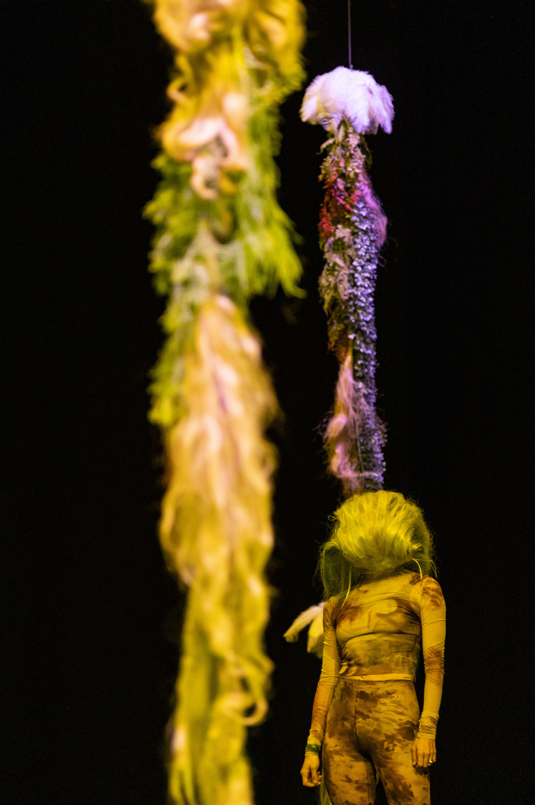
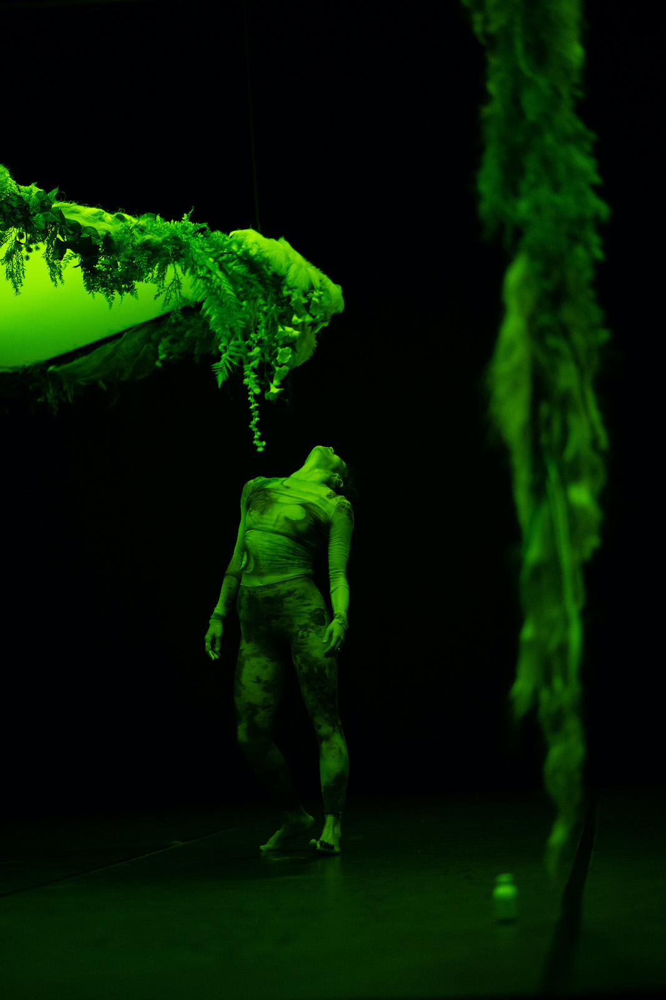
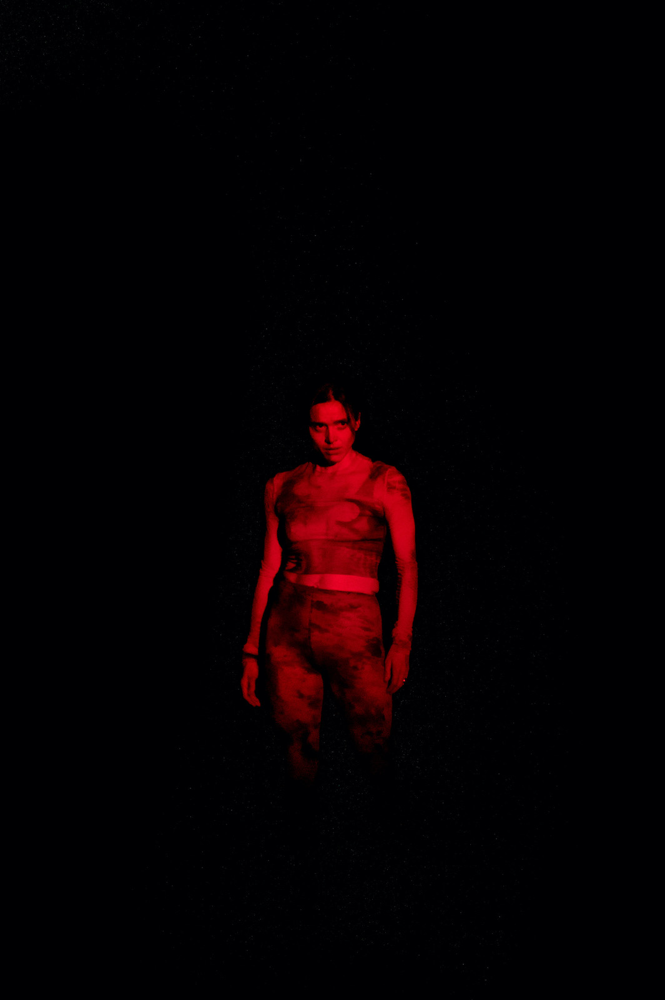
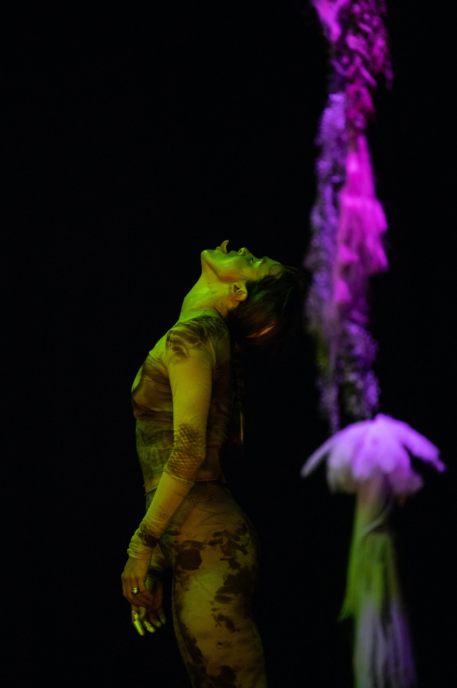

La notte è il mio giorno preferito
La notte è il mio giorno preferito is a reflection on the relationship with the Other through a meditation on animals and the ecosystems in which they live.
The show takes its cue from the practice, outlined by Baptiste Morizot in the essay Sur la piste animale, of philosophical tracing: the exercise of following the trails crossed by wild animals in an attempt to borrow their gaze and imagine their possibilities of action, following the ontological position of perspectivism formulated by the anthropologist Eduardo Viveiros de Castro.
A residency organized by far° Nyon allowed the experience of the practice of tracing in the territories of Val d'Illiez and Jura (Switzerland) and to deepen the research on its ecosystem.
The animal and the vegetable, the organic and the inorganic merge in the dark space of the nocturnal forest; landslides and calls break the quiet. Signals and mysterious perceptive instruments, inspired by different species, constitute the connective tissue. A forest neither virgin nor idealized, but technonatural, which includes and transforms the signs left by its inhabitants.
The title La notte è il mio giorno preferito (The night is my favorite day), taken from a letter by Emily Dickinson, refers to the darkness as a space of the absent presence of the animal, as a place of intuition and encounter with the Other.
La notte è il mio giorno preferito is imagined and realized in collaboration with Natália Trejbalová (visual artist), Stella Succi (researcher), Giulia Pastore (light designer), Jules Goldsmith (costume designer), Flora Yin-Wong (sound artist).
Production Associazione L’Altra.
Co-production FOG Triennale Milano Performing Arts, Fondazione del Teatro Grande di Brescia,
Torinodanza, Fondazione I Teatri Reggio Emilia \ Festival Aperto, Lac Lugano Arte e Cultura, Azienda
Speciale Palaexpo – Mattatoio | Progetto Prendersi cura.
Supported by Centro Nazionale di Produzione della Danza Virgilio Sieni e di Fondazione CR
Firenze, Oriente Occidente, far° festival des arts vivants Nyon.
Associated artist Triennale Milano Teatro 2021-2024.
Company funded by MiC - Ministry of Culture.
Concept, dance
Annamaria Ajmone
Set, styling, images
Natália Trejbalová
Research, dramaturgic collaboration
Stella Succi
Music
Flora Yin Wong
Costume
Jules Goldsmith
Light design
Giulia Pastore
Light technician
Elena Vastano
Voice training
VEZA e Paola Stella Minni
Web project
Giulia Polenta
Organisation
Martina Merico
Management
Francesca d’Apolito
PRESS
"Annamaria Ajmone. Nella notte, alla ricerca dell’alterità", Stefano Tomassini
Teatro e Critica (2021)
"Ajmone, la magnetica fisicità di una vitalità instancabile"
Bresciaoggi (2022)
"Animale, vegetale, selvaggia, concettuale", Sara Polotti
Giornale di Brescia (2022)
MEDUSA newsletter (2022)
"Sulla pista del buio: in dialogo con Annamaria Ajmone", Giada Cipollone
Triennale Magazine (2022)
"Annamaria Ajmone: La notte è il mio giorno preferito", Annika Pettini
ZERO (2022)
"Call of the Wild", Lauren Mackler
ARTFORUM (2022)
Listen to Flora Yin Wong
"A volte mi sembra che nella foresta il tracciamento sostituisca, sotto i nostri piedi e alle nostre spalle, un’ontologia a un’altra: lo schema naturalista diviene prospettivista, si tinge di animismo, si mescola, si chimerizza. Come i prestigiatori tolgono la tovaglia senza far cadere i piatti, ritroviamo furtivamente sotto i nostri piedi, sul suolo che scrutiamo, un’altra carta del vivente in scala 1:1 – un’altra ontologia da esplorare e condividere. Il tracciamento è una pratica su piccola scala che ci fa circolare tra i mondi, tra le ontologie. Come funziona questo gioco di prestigio? Che tipo di spostamento ha luogo quando sentiamo di vedere con gli occhi di un altro?"
B. Morizot, “Sulla pista animale”